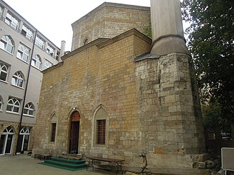

परिचय
La mosquée Bajrakli de Belgrade, également connue sous le nom de Bayrakli, est une mosquée de Belgrade, la capitale de la Serbie. Elle est située dans le quartier de Dorćol, dans la municipalité urbaine de Stari grad. Construite entre 1660 et 1668, elle est inscrite sur la liste des monuments culturels de grande importance de la république de Serbie et sur la liste des biens culturels de la ville de Belgrade.
مسجد بجراكلي هو مسجد للمسلمين في مدينة بلغراد عاصمة صربيا، بني في عام 1575م خلال فترة حكم الدولة العثمانية، أثناء احتلال صربيا من قبل النمساويين ، تم تحويل المسجد إلى كنسية كاثوليكية، ولكن بعد أن استعاد العثمانيون بلغراد أعيد إلى وظيفته الأصلية. تضرر المسجد كثيرا نتيجة أعمال الشغب المناهضة للالبان منذ عام 2004.
The Bajrakli Mosque is a mosque in Belgrade, Serbia. Built around 1575, it is the only mosque in the city out of the 273 that had existed during the time of the Ottoman Empire's rule of Serbia.
Bayraklı Camii, Osmanlı devrinde bugün Sırbistan'ın başkenti olan Belgrad'da inşa edilen cami. Cami 1575 yılı civarında yapılmıştır.
Masjid Bajrakli adalah sebuah masjid yang terletak di Beograd, ibu kota Serbia. Masjid ini terletak di Jalan Gospodar Jevremova di kawasan Dorćol. Masjid ini dibangun sekitar tahun 1575 dan merupakan satu-satunya masjid yang masih tersisa di kota tersebut dari 273 masjid yang ada pada masa kekuasaan Kesultanan Utsmaniyah di Serbia.
بجراکلی مسجد سربیا کے دار الحکومت بلغراد میں واقع ایک عظیم مسجد ہے۔ یہ 1575ء میں اُس وقت تعمیر کی گئی جب سربیا سلطنت عثمانیہ کے زیر نگیں تھا۔ 1717ء سے 1739ء تک سربیا پر آسٹریا کے قبضے کے دوران اس مسجد کو رومن کیتھولک گرجے میں تبدیل کر دیا گیا لیکن جب عثمانیوں نے شہر پر دوبارہ قبضہ کیا تو اس کی مسجد کی حیثیت بحال کر دی۔ 18 مارچ 2004ء کو مسجد میں آتشزدگی سے اس کو شدید نقصان پہنچا تاہم بعد ازاں اس کی مرمت کر دی گئی۔
Die Bajrakli-Moschee ist die letzte erhaltene Moschee von den ursprünglich 80 Moscheen in der serbischen Hauptstadt Belgrad. Sie liegt im Stadtteil Stari Grad in der Gospodar Jevremova 11. Die Moschee erhielt ihren Namen am Ende des 18. Jahrhunderts, weil auf ihr eine Fahne gehisst wurde, die das Zeichen für den gleichzeitigen Gebetsbeginn in den anderen Moscheen der Stadt gab.
La mezquita Bajrakli, es una antigua y conocida mezquita de Belgrado, capital de Serbia. Se sitúa en la calle Gospodar Jevremova, en el distrito de Dorćol, siendo construida durante la dominación otomana en torno a 1575, y es la única que se conserva de las 273 que llegó a tener la ciudad. Fue iglesia católica durante la breve dominación austriaca entre 1717 y 1739, aunque retomó su función como mezquita tras volver Belgrado a manos turcas ese año. En 2004, sufrió algunos actos vandálicos, aunque ha sido reparada posteriormente.
Мечеть Байракли — мечеть в Белграде (Сербия), единственная в городе, действует. Памятник культуры, расположена в историческом квартале вокруг Досифеева лицея.
Bajraklimoskén är en sunnimuslimsk moské belägen i Belgrad, Serbien. Under tiden då det Osmanska riket styrde Belgrad fanns runt 80 moskéer i staden. Idag är Bajraklimoskén den enda kvarvarande. Moskén byggdes runt 1575. "Bayrakli" betyder "med flagga" på turkiska.
नक़्शे पर
दस्तावेज़ और लिंक
- Wikipédia — Français
- Wikipédia — العربية
- Wikipédia — English
- Wikipédia — Türkçe
- Wikipédia — Bahasa Indonesia
- Wikipédia — اردو
- Wikipédia — Deutsch
- Wikipédia — Español
- Wikipédia — Русский
- Wikipédia — Svenska
- Wikidata — Q804208
डेटा: विकिडेटा (CC0), हर 3 महीने में अपडेट। वर्ष इमारत के निर्माण की सबसे पुरानी ज्ञात तिथि है: जो इमारत बाद में मस्जिद बनी (जैसे हागिया सोफ़िया), उसके लिए यह मूल इमारत का वर्ष है। तस्वीरें: विकिमीडिया कॉमन्स, लेखक और लाइसेंस हर तस्वीर के पेज पर।